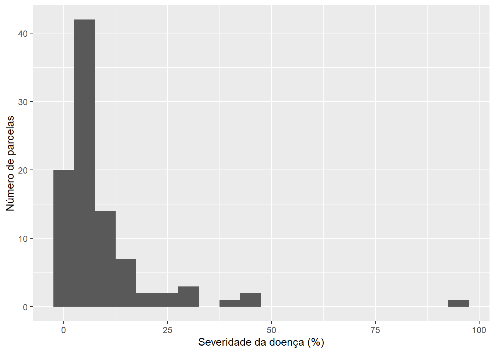
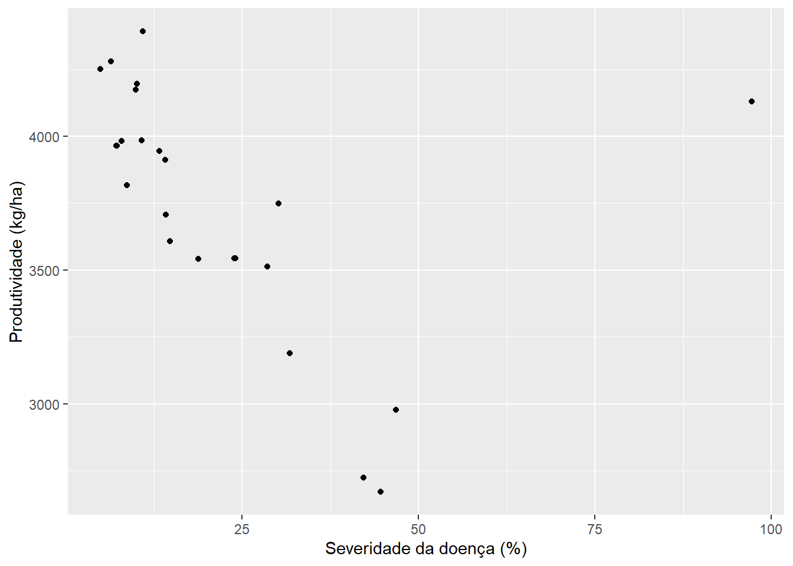
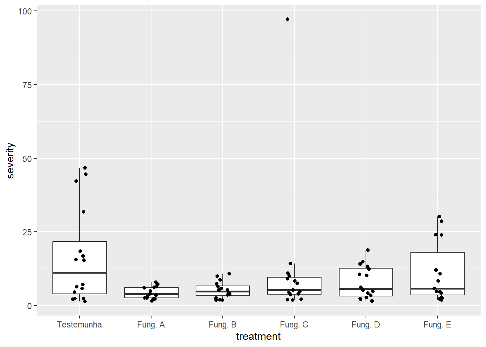
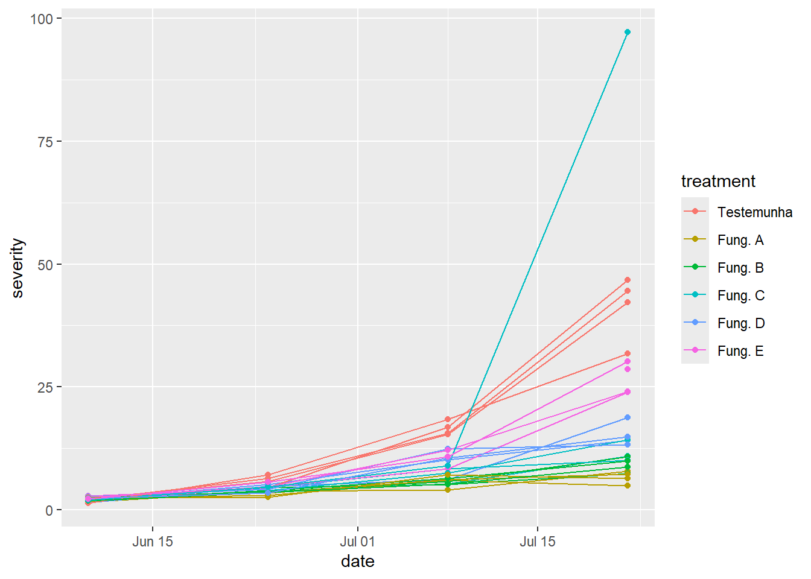
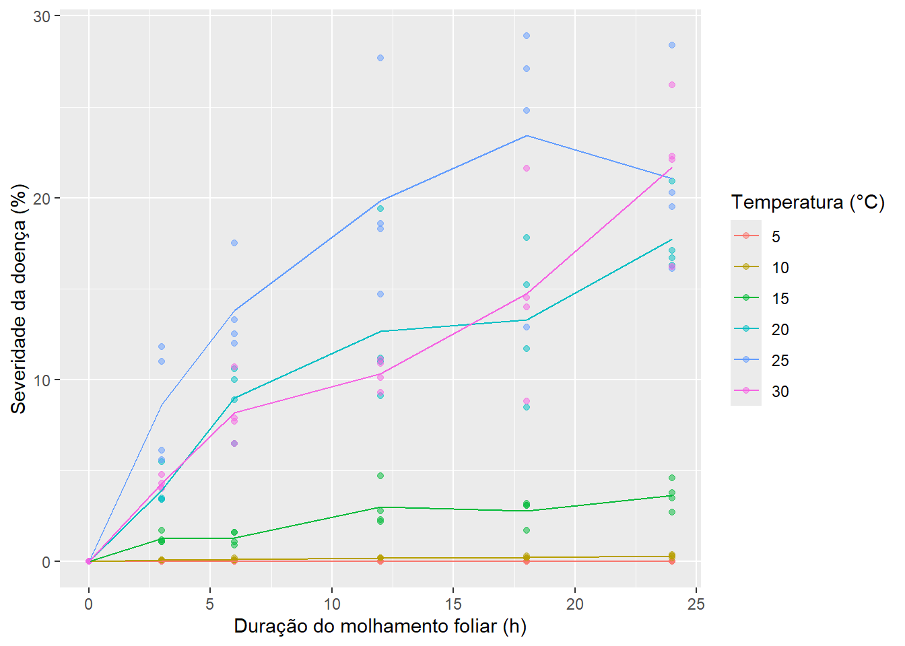

4 O que os dados revelam?
4.1 Objetivos de aprendizagem
Importante
Ao concluir este capítulo, o leitor deverá ser capaz de:
- explicar o papel da análise exploratória de dados (AED) na pesquisa científica;
- distinguir a exploração da inferência estatística;
- resumir variáveis individuais numérica e graficamente;
- identificar observações incomuns, valores perdidos e possíveis erros;
- explorar relações entre variáveis;
- reconhecer padrões que orientam as análises estatísticas subsequentes;
- formular questões biológicas que surgem das análises exploratórias.
4.2 Por que explorar os dados?
Depois que os dados foram coletados e organizados, é tentador passar diretamente ao teste estatístico que responde à questão do projeto de pesquisa. Pesquisadores experientes raramente fazem isso. Antes de estimar efeitos ou testar hipóteses, eles olham os dados: quantas observações existem, como os valores se distribuem, se algo está faltando ou é implausível e que padrões aparecem entre as variáveis. Essa etapa é chamada análise exploratória de dados (AED).
O termo foi popularizado pelo estatístico John Tukey, que defendia que olhar os dados com a mente aberta é tão importante para a ciência quanto confirmar expectativas, e que os números devem ser examinados graficamente e com resumos simples e robustos antes da aplicação de modelos formais (Tukey 1977). Tukey comparava a análise exploratória ao trabalho de um detetive: ela procura pistas, enquanto a análise confirmatória avalia a força das provas no tribunal.
A exploração serve a vários propósitos. Ela revela erros que escaparam à validação dos dados (Capítulo 3), como um valor de severidade de 250% ou um tratamento que aparece em apenas três dos quatro blocos. Mostra se os dados têm as características pressupostas pelos métodos planejados para a análise, como distribuições aproximadamente simétricas ou variabilidade semelhante entre grupos. Mostra o tamanho e a direção das diferenças antes de qualquer teste, o que mantém a atenção nos efeitos biológicos, e não nos valores-P. E frequentemente revela padrões não previstos, como um gradiente entre blocos ou a resposta incomum de uma cultivar, que podem se tornar os resultados mais interessantes do estudo.
Importante
A análise exploratória de dados não é feita para confirmar hipóteses, mas para compreender os dados antes das análises estatísticas formais.
4.3 Análise exploratória versus confirmatória
4.3.1 O que é análise exploratória de dados?
A análise exploratória de dados é um exame aberto dos dados, baseado principalmente em gráficos e resumos simples, cujo objetivo é compreender o que os dados contêm. Ela faz perguntas como: Que valores cada variável assume? Quão variáveis são as observações? Há observações incomuns? Quais variáveis parecem estar relacionadas? Os grupos diferem, e em quanto?
A exploração é flexível. O pesquisador pode experimentar diferentes gráficos, olhar subconjuntos dos dados e seguir pistas que surgem pelo caminho. Seus produtos são descrições, perguntas e hipóteses, e não conclusões formais.
4.3.2 O que é análise confirmatória?
A análise confirmatória avalia a evidência para questões e hipóteses definidas com antecedência, usando métodos escolhidos de acordo com o delineamento do estudo. Ela estima efeitos com medidas de incerteza, como intervalos de confiança, e pode testar hipóteses estatísticas (Capítulo 6). A análise confirmatória segue regras fixadas antes de os resultados serem vistos. Essas regras protegem contra encontrar padrões que são simplesmente fruto do acaso.
4.3.3 Por que ambas são necessárias
Exploração e confirmação desempenham papéis complementares. Sem exploração, análises confirmatórias podem ser aplicadas a dados com erros, a variáveis cujas distribuições violam os pressupostos do método escolhido ou a questões que os dados não conseguem responder. Sem confirmação, os padrões exploratórios continuam sendo impressões: com gráficos e subconjuntos suficientes, algum padrão marcante sempre aparecerá, mesmo em dados sem nenhum efeito real.
A distinção importa sobretudo quando a exploração sugere uma nova hipótese. Um padrão descoberto ao explorar um conjunto de dados não pode ser testado de forma justa com os mesmos dados, porque eles foram usados para encontrá-lo. Esses padrões devem ser relatados como achados exploratórios e, sempre que possível, confirmados com novos dados de um estudo independente.
| Característica | Análise exploratória | Análise confirmatória |
|---|---|---|
| Objetivo principal | Compreender os dados, encontrar padrões | Avaliar a evidência para questões predefinidas |
| Questões | Abertas, podem mudar durante a análise | Definidas antes da análise |
| Principais ferramentas | Gráficos, resumos simples | Estimativas, intervalos, modelos, testes |
| Flexibilidade | Alta | Baixa; o plano de análise é fixo |
| Produto típico | Descrições, perguntas, hipóteses | Conclusões com incerteza quantificada |
| Principal risco | Superinterpretar padrões casuais | Aplicar métodos a dados que não se ajustam a eles |
4.4 Conhecendo o seu conjunto de dados
Toda exploração começa com perguntas simples sobre o conjunto de dados como um todo. Os exemplos deste capítulo usam o R e funções do tidyverse, que são apresentados com mais detalhe em capítulos posteriores. O código é mostrado para ilustrar as etapas; as mesmas etapas podem ser feitas em qualquer programa estatístico.
library(tidyverse)
data <- read_csv("data/processed/field_trial.csv")Para que os exemplos possam ser executados, este capítulo usa um conjunto de dados simulado com a mesma estrutura: um ensaio em blocos casualizados com seis tratamentos, quatro blocos e quatro datas de avaliação. Como em dados reais, ele contém alguns problemas para a exploração encontrar.
4.4.1 Dimensões do conjunto de dados
A primeira verificação é o número de linhas e colunas. O número de linhas deve corresponder ao número de observações esperado pelo delineamento. Um DBC com seis tratamentos, quatro blocos e quatro datas de avaliação deve produzir 6 × 4 × 4 = 96 linhas. Se o conjunto de dados tiver 95 ou 100 linhas, algo está faltando ou duplicado, e o motivo precisa ser encontrado antes de prosseguir.
dim(data) # número de linhas e colunas[1] 96 6nrow(data)[1] 964.4.2 Nomes das variáveis
Em seguida, liste os nomes das variáveis e confira se correspondem ao dicionário de dados. Colunas inesperadas (como ...7, criada quando a planilha tem uma coluna vazia com formatação) ou colunas ausentes indicam problemas de importação.
names(data)[1] "plot" "block" "treatment" "date" "severity" "yield" head(data) # primeiras linhas do conjunto de dados# A tibble: 6 × 6
plot block treatment date severity yield
<dbl> <fct> <fct> <date> <dbl> <dbl>
1 101 1 Testemunha 2025-06-10 2.3 2723
2 101 1 Testemunha 2025-06-24 5.8 2723
3 101 1 Testemunha 2025-07-08 15.3 2723
4 101 1 Testemunha 2025-07-22 42.2 2723
5 102 1 Fung. A 2025-06-10 1.6 3983
6 102 1 Fung. A 2025-06-24 3.8 39834.4.3 Classes das variáveis
Os programas atribuem uma classe a cada variável: numérica, inteira, caractere, fator, lógica ou data. Conferir as classes revela muitos problemas de uma vez. Uma coluna de severidade lida como caractere geralmente contém, em algum lugar, uma entrada não numérica, como 12*, n/a ou 25%. Uma coluna de bloco lida como numérica precisa ser convertida em variável categórica (fator) antes da análise. Uma data lida como caractere precisa ser convertida em data.
glimpse(data) # nomes, classes e primeiros valores de cada variávelRows: 96
Columns: 6
$ plot <dbl> 101, 101, 101, 101, 102, 102, 102, 102, 103, 103, 103, 103, …
$ block <fct> 1, 1, 1, 1, 1, 1, 1, 1, 1, 1, 1, 1, 1, 1, 1, 1, 1, 1, 1, 1, …
$ treatment <fct> Testemunha, Testemunha, Testemunha, Testemunha, Fung. A, Fun…
$ date <date> 2025-06-10, 2025-06-24, 2025-07-08, 2025-07-22, 2025-06-10,…
$ severity <dbl> 2.3, 5.8, 15.3, 42.2, 1.6, 3.8, 4.0, 7.9, 1.9, 4.5, 5.1, 7.3…
$ yield <dbl> 2723, 2723, 2723, 2723, 3983, 3983, 3983, 3983, 3965, 3965, …4.4.4 Valores perdidos
Conte os valores perdidos em cada variável e verifique onde ocorrem. Poucos valores perdidos espalhados têm implicações diferentes de muitos valores perdidos concentrados em um tratamento, bloco ou data. Se as plantas morreram no tratamento mais suscetível, a perda está relacionada à própria resposta e pode enviesar as comparações.
colSums(is.na(data)) # valores perdidos por coluna plot block treatment date severity yield
0 0 0 0 2 0 data |>
filter(is.na(severity)) |>
count(treatment, date) # onde eles estão?# A tibble: 2 × 3
treatment date n
<fct> <date> <int>
1 Fung. C 2025-06-10 1
2 Fung. E 2025-07-08 14.4.5 Primeiros resumos
Por fim, calcule resumos simples de todas as variáveis e conte as observações em cada combinação dos fatores do delineamento. Esses resumos revelam valores impossíveis (mínimo ou máximo fora da faixa permitida), rótulos de categorias inconsistentes e delineamentos desbalanceados.
summary(data) plot block treatment date severity
Min. :101.0 1:24 Testemunha:16 Min. :2025-06-10 Min. : 1.300
1st Qu.:177.2 2:24 Fung. A :16 1st Qu.:2025-06-20 1st Qu.: 2.850
Median :253.5 3:24 Fung. B :16 Median :2025-07-01 Median : 5.300
Mean :253.5 4:24 Fung. C :16 Mean :2025-07-01 Mean : 9.528
3rd Qu.:329.8 Fung. D :16 3rd Qu.:2025-07-11 3rd Qu.:10.425
Max. :406.0 Fung. E :16 Max. :2025-07-22 Max. :97.200
NA's :2
yield
Min. :2670
1st Qu.:3542
Median :3864
Mean :3740
3rd Qu.:4022
Max. :4392
data |> count(treatment) # observações por tratamento# A tibble: 6 × 2
treatment n
<fct> <int>
1 Testemunha 16
2 Fung. A 16
3 Fung. B 16
4 Fung. C 16
5 Fung. D 16
6 Fung. E 16data |> count(treatment, block) # o delineamento está completo?# A tibble: 24 × 3
treatment block n
<fct> <fct> <int>
1 Testemunha 1 4
2 Testemunha 2 4
3 Testemunha 3 4
4 Testemunha 4 4
5 Fung. A 1 4
6 Fung. A 2 4
7 Fung. A 3 4
8 Fung. A 4 4
9 Fung. B 1 4
10 Fung. B 2 4
# ℹ 14 more rows
Dica
Compare o conjunto de dados com o delineamento do estudo: número de tratamentos, de blocos ou repetições, de datas e de unidades experimentais. Discrepâncias são quase sempre erros de digitação ou de importação.
4.5 Explorando uma variável
Depois da visão geral, cada variável importante é examinada individualmente. O objetivo é descrever seu centro, sua dispersão, a forma da sua distribuição e eventuais valores incomuns.
4.5.1 Resumos numéricos
Um pequeno conjunto de resumos descreve uma variável quantitativa:
- média: a média aritmética, a soma dos valores dividida pelo seu número;
- mediana: o valor central quando as observações são ordenadas; metade das observações está abaixo dela e metade acima;
- desvio padrão: uma medida da distância típica entre as observações e sua média, expressa nas unidades da variável;
- quartis: os valores abaixo dos quais estão 25% (primeiro quartil) e 75% (terceiro quartil) das observações; a distância entre eles é a amplitude interquartil (AIQ), que contém a metade central dos dados;
- mínimo e máximo: o menor e o maior valor, que definem a amplitude.
A média e o desvio padrão são sensíveis a valores extremos, enquanto a mediana e os quartis são resistentes a eles. Quando média e mediana diferem muito, a distribuição é assimétrica ou contém observações extremas. Por isso, é útil relatar ambas.
data |>
summarise(
n = sum(!is.na(severity)),
mean = mean(severity, na.rm = TRUE),
median = median(severity, na.rm = TRUE),
sd = sd(severity, na.rm = TRUE),
q1 = quantile(severity, 0.25, na.rm = TRUE),
q3 = quantile(severity, 0.75, na.rm = TRUE),
min = min(severity, na.rm = TRUE),
max = max(severity, na.rm = TRUE)
)# A tibble: 1 × 8
n mean median sd q1 q3 min max
<int> <dbl> <dbl> <dbl> <dbl> <dbl> <dbl> <dbl>
1 94 9.53 5.3 13.0 2.85 10.4 1.3 97.2Para variáveis categóricas, os resumos relevantes são as contagens e proporções em cada categoria.
4.5.2 Distribuição
A distribuição de uma variável descreve quais valores ocorrem e com que frequência. Os resumos numéricos condensam a distribuição em poucos números; os gráficos a mostram diretamente. Histogramas, gráficos de densidade, gráficos de pontos e diagramas de caixa (boxplots) são as ferramentas usuais, e sua construção é discutida no Capítulo 5.
ggplot(data, aes(x = severity)) +
geom_histogram(binwidth = 5) +
labs(x = "Severidade da doença (%)", y = "Número de parcelas")Warning: Removed 2 rows containing non-finite outside the scale range
(`stat_bin()`).
Três características da distribuição merecem atenção:
- simetria: se os valores se distribuem de modo semelhante dos dois lados do centro;
- assimetria: uma distribuição com uma cauda mais longa de um lado. Dados de doença frequentemente têm assimetria à direita: a maioria das plantas ou parcelas tem pouca doença, e algumas têm muita. Contagens de lesões, de esporos e quantidades de DNA do patógeno costumam se comportar assim;
- dispersão: quão amplamente os valores variam. Na Fitopatologia, a variabilidade frequentemente aumenta com a média, de modo que tratamentos com mais doença também são mais variáveis.
Outras características também são informativas. Uma distribuição com dois picos (bimodal) pode indicar que dois grupos diferentes foram misturados, como plantas resistentes e suscetíveis ou duas datas de avaliação. Muitos zeros podem indicar escape à infecção ou um limite de detecção. Valores acumulados em 0% ou 100% revelam os limites de uma escala percentual. Valores concentrados em 5, 10, 25 e 50% refletem hábitos de arredondamento da avaliação visual, e não a biologia.
Essas características antecipam decisões tomadas mais tarde. A assimetria e a variabilidade que muda com a média podem exigir transformações ou modelos próprios para contagens e proporções (Capítulos 7 a 10).
4.5.3 Valores discrepantes
Um valor discrepante (outlier) é uma observação excepcionalmente distante do restante dos dados. Uma regra comum classifica como possíveis valores discrepantes os valores situados mais de 1,5 vez a amplitude interquartil abaixo do primeiro quartil ou acima do terceiro, que é a regra usada nos diagramas de caixa. Essa regra é uma ferramenta de triagem, não uma definição: um valor sinalizado pela regra pode ser perfeitamente válido, e um erro pode estar dentro da faixa normal.
Um valor discrepante pode ter três origens. Pode ser um erro de medida, registro ou digitação, como uma vírgula decimal deslocada. Pode ser uma observação real, mas incomum, como uma parcela localizada perto de uma fonte de inóculo. Ou pode indicar que a observação pertence a uma população diferente, como uma planta infectada por outro patógeno. Cada origem exige uma ação diferente: corrigir o erro a partir dos registros originais, manter o valor e examinar sua influência nos resultados, ou reconsiderar o escopo do estudo.
Aviso
Valores discrepantes nunca devem ser removidos apenas porque são inconvenientes ou porque sua remoção produz um resultado significativo. Toda exclusão deve ser justificada com base documentada e relatada.
4.5.4 Valores perdidos
Os valores perdidos também afetam as variáveis individualmente. A proporção de valores perdidos, e se eles estão relacionados a outras variáveis, determinam o quanto podem afetar as conclusões. Resumos calculados com os valores perdidos removidos silenciosamente (como com na.rm = TRUE) baseiam-se em menos observações do que o planejado, e isso deve ser relatado.
4.6 Explorando relações
A maioria das questões em Fitopatologia envolve relações: entre doença e produtividade, entre tratamento e severidade, entre clima e infecção. A exploração das relações depende dos tipos de variáveis envolvidas.
4.6.1 Contínua versus contínua
A relação entre duas variáveis quantitativas, como severidade e produtividade, ou temperatura e tamanho da lesão, é explorada com um gráfico de dispersão. O gráfico mostra a direção da relação (crescente, decrescente, nenhuma), sua forma (linear, curva, com platô ou limiar), sua intensidade (quão de perto os pontos seguem um padrão) e as observações incomuns que não seguem o padrão geral.
# uma observação por parcela: a severidade na última avaliação
final <- filter(data, date == max(date))
ggplot(final, aes(x = severity, y = yield)) +
geom_point() +
labs(x = "Severidade da doença (%)", y = "Produtividade (kg/ha)")
Na etapa exploratória, o objetivo é descrever o padrão, e não ajustar um modelo. Correlação e regressão são apresentadas no Capítulo 8.
4.6.2 Contínua versus categórica
Comparar uma resposta quantitativa entre grupos, como a severidade entre tratamentos com fungicidas ou o diâmetro das lesões entre isolados, é a situação mais comum em experimentos. Resumos numéricos por grupo (contagens, médias, medianas, desvios padrão) são complementados por gráficos que mostram as observações individuais, como gráficos de pontos ou diagramas de caixa com pontos.
data |>
group_by(treatment) |>
summarise(n = n(), mean = mean(severity), sd = sd(severity))# A tibble: 6 × 4
treatment n mean sd
<fct> <int> <dbl> <dbl>
1 Testemunha 16 16.5 16.1
2 Fung. A 16 4.44 2.07
3 Fung. B 16 5.19 2.83
4 Fung. C 16 NA NA
5 Fung. D 16 7.9 5.50
6 Fung. E 16 NA NA ggplot(data, aes(x = treatment, y = severity)) +
geom_boxplot(outlier.shape = NA) +
geom_jitter(width = 0.1)Warning: Removed 2 rows containing non-finite outside the scale range
(`stat_boxplot()`).Warning: Removed 2 rows containing missing values or values outside the scale range
(`geom_point()`).
Além das diferenças de centro, procure diferenças de dispersão entre grupos, assimetria dentro dos grupos, grupos com poucas observações e observações incomuns dentro do seu grupo, mesmo que não o sejam no conjunto.
4.6.3 Categórica versus categórica
A relação entre duas variáveis categóricas, como cultivar e presença de doença, ou região e espécie do patógeno, é explorada com tabelas de contingência que mostram contagens e proporções em cada combinação de categorias. As proporções devem ser calculadas na direção que responde à questão: por exemplo, a proporção de lavouras infectadas em cada sistema de preparo do solo, e não a proporção de sistemas de preparo entre as lavouras infectadas.
levantamento |>
count(tillage, disease_present) |>
group_by(tillage) |>
mutate(proportion = n / sum(n))# A tibble: 4 × 4
# Groups: tillage [2]
tillage disease_present n proportion
<chr> <chr> <int> <dbl>
1 Convencional não 49 0.721
2 Convencional sim 19 0.279
3 Plantio direto não 17 0.327
4 Plantio direto sim 35 0.6734.6.4 O tempo como variável
Quando as observações se repetem ao longo do tempo, o tempo torna-se uma variável central. O progresso da doença é explorado representando a resposta em função do tempo, com as observações da mesma unidade ligadas por linhas. Isso revela a forma da epidemia, o momento de início, diferenças entre tratamentos que aparecem apenas no fim da safra e unidades que se comportam de modo diferente das demais.
ggplot(data, aes(x = date, y = severity, group = plot, color = treatment)) +
geom_line() +
geom_point()Warning: Removed 1 row containing missing values or values outside the scale range
(`geom_line()`).Warning: Removed 2 rows containing missing values or values outside the scale range
(`geom_point()`).
Séries meteorológicas e outras séries temporais são exploradas da mesma forma. Observações próximas no tempo tendem a ser semelhantes, o que significa que não são independentes — uma característica que precisa ser considerada em análises posteriores.
| Variáveis envolvidas | Resumos numéricos | Gráficos |
|---|---|---|
| Uma quantitativa | Média, mediana, DP, quartis, amplitude | Histograma, densidade, diagrama de caixa, gráfico de pontos |
| Uma categórica | Contagens, proporções | Gráfico de barras de contagens |
| Quantitativa vs quantitativa | Descrição da direção, forma, intensidade | Gráfico de dispersão |
| Quantitativa vs categórica | Resumos por grupo | Gráfico de pontos, diagrama de caixa com pontos |
| Categórica vs categórica | Tabela de contingência, proporções | Barras agrupadas ou empilhadas, gráfico de mosaico |
| Quantitativa ao longo do tempo | Resumos por data | Gráfico de linhas ligando cada unidade |
4.7 Padrões que merecem investigação
A exploração é uma busca por padrões. Alguns confirmam as expectativas; outros são surpreendentes e merecem atenção.
4.7.1 Tendências
Uma tendência é um aumento ou uma diminuição sistemática de uma resposta com outra variável: a doença aumentando com o tempo, a produtividade diminuindo com a severidade, a infecção aumentando com a duração do molhamento. As tendências podem ser lineares ou curvas, podem se estabilizar em um platô ou mudar de direção em um ótimo, como ocorre com a resposta de muitos patógenos à temperatura.
4.7.2 Agrupamentos
Agrupamentos são grupos de observações semelhantes entre si e diferentes das demais. Em um gráfico de dispersão de severidade versus produtividade, pontos de locais ou anos diferentes frequentemente formam nuvens separadas. Os agrupamentos sugerem uma variável de agrupamento não considerada, e uma relação aparente no conjunto pode desaparecer, ou se inverter, dentro dos grupos.
4.7.3 Gradientes
Um gradiente é uma mudança sistemática da resposta no espaço ou ao longo da ordem em que as unidades foram manuseadas. A doença pode aumentar de um lado da lavoura para o outro, seguindo a drenagem ou o vento predominante a partir de uma fonte de inóculo, ou pode diferir entre bancadas de uma casa de vegetação. Representar as respostas em função do bloco, da linha, da coluna, da bancada ou da ordem de processamento revela gradientes. Eles justificam o uso de blocos (Capítulo 2) e, quando inesperados, podem apontar problemas na condução do experimento.
4.7.4 Interações
Uma interação ocorre quando o efeito de um fator depende do nível de outro. Um fungicida pode reduzir muito a doença em uma cultivar suscetível e ter pouco efeito em uma resistente; a infecção pode aumentar com a duração do molhamento a 25 °C, mas não a 10 °C. Nos gráficos exploratórios, as interações aparecem como linhas não paralelas quando as médias dos grupos são representadas em função de um fator, com linhas separadas para os níveis do outro. As interações são frequentemente importantes do ponto de vista biológico e determinam como os dados deverão ser modelados.
4.7.5 Valores discrepantes
Os valores discrepantes, discutidos antes para variáveis individuais, também podem aparecer apenas nas relações: uma parcela com severidade e produtividade médias pode ainda assim ser incomum se sua produtividade for muito maior do que o esperado para sua severidade. Essas observações só são visíveis em gráficos de dispersão ou em gráficos por grupo.
4.7.6 Erros de digitação
A exploração é a última oportunidade de detectar erros antes que afetem as conclusões. Sinais típicos são valores fora da faixa possível, valores exatamente dez ou cem vezes maiores que o esperado, linhas idênticas, saltos bruscos na série temporal de uma unidade e rótulos de categoria que aparecem uma única vez.
4.7.7 Observações inesperadas
Algumas observações não se encaixam em nenhum padrão esperado: uma parcela testemunha sem doença em uma safra de alta pressão, uma cultivar resistente com sintomas severos, um único isolado muito mais agressivo do que todos os outros. Essas observações podem ser erros, mas também podem ser o primeiro sinal de algo novo, como uma nova raça do patógeno superando a resistência.
Dica
Descobertas interessantes muitas vezes começam como observações inesperadas durante a análise exploratória.
4.8 Interpretação biológica
4.8.1 Padrões estatísticos versus significado biológico
Um padrão nos dados ainda não é um achado biológico. Uma diferença entre tratamentos, uma tendência ao longo do tempo ou um agrupamento de pontos só ganha significado quando interpretado à luz da biologia do patossistema e do delineamento do estudo. O mesmo padrão pode ter explicações muito diferentes. Uma severidade maior em um bloco pode refletir um gradiente ambiental real, um avaliador diferente ou uma data de avaliação posterior. Uma associação negativa entre severidade e produtividade em um levantamento pode refletir o dano causado pela doença, ou o fato de que lavouras com manejo ruim têm mais doença e menor produtividade por outros motivos.
Interpretar um padrão exige, portanto, perguntar: O padrão é grande o suficiente para importar biologicamente? É consistente entre blocos, experimentos ou anos? Poderia ser explicado pelo delineamento, pelo processo de coleta ou por um erro? É coerente com o que se sabe sobre o hospedeiro, o patógeno e o ambiente?
4.8.2 Fazendo novas perguntas
Uma boa análise exploratória costuma terminar com mais perguntas do que começou. Por que uma cultivar respondeu de modo diferente ao fungicida? Por que o progresso da doença parou depois da terceira avaliação? Por que algumas lavouras estão livres da doença apesar do clima favorável? Essas perguntas podem ser respondidas examinando outras variáveis do conjunto de dados, consultando as anotações de campo ou delineando um novo estudo.
4.8.3 Gerando hipóteses
A exploração é uma fonte legítima e valiosa de hipóteses científicas. Um padrão observado em um levantamento, como mais doença em lavouras semeadas mais cedo, pode levar à hipótese de que a semeadura antecipada expõe as plantas a condições mais favoráveis à infecção. Essa hipótese pode então ser testada em um experimento planejado, fechando o ciclo entre observação, hipótese e teste descrito no Capítulo 2.
A regra essencial é ser transparente sobre como a hipótese foi gerada. Uma hipótese sugerida pela exploração dos dados não é confirmada pelos mesmos dados. Relatar os achados exploratórios como exploratórios, e os confirmatórios como confirmatórios, é uma questão de integridade científica.
Importante
A exploração gera hipóteses; a confirmação exige dados que não foram usados para gerá-las.
4.9 Pesquisa na prática
DicaPesquisa revisitada: Explorando os efeitos da temperatura e do molhamento na antracnose da videira
Contexto
O Capítulo 1 apresentou um estudo em ambiente controlado sobre como a temperatura e a duração do molhamento foliar influenciam a infecção de folhas de videira por Elsinoë ampelina, agente causal da antracnose da videira (Carisse et al. 2020). As plantas foram inoculadas e expostas a combinações de seis temperaturas (5 a 30 °C) e seis durações de molhamento (0 a 24 h), e a severidade da doença foi avaliada cerca de uma semana depois. Aqui perguntamos: antes de ajustar qualquer modelo, o que esses dados sugerem? Os valores abaixo são ilustrativos e não reproduzem os dados publicados.
Os dados brutos
O conjunto de dados organizado tem uma linha por planta inoculada:
| temp_c | wetness_h | plant | severity |
|---|---|---|---|
| 5 | 0 | 1 | 0.0 |
| 5 | 24 | 1 | 0.0 |
| 15 | 12 | 1 | 4.2 |
| 25 | 12 | 1 | 11.8 |
| 25 | 24 | 1 | 24.5 |
| 30 | 24 | 1 | 13.1 |
| … | … | … | … |
Conhecendo o conjunto de dados
Com seis temperaturas, seis durações de molhamento e um número fixo de plantas por combinação, o número esperado de linhas é conhecido de antemão e pode ser comparado com o número real. As duas variáveis explicativas são numéricas e controladas; a severidade é uma porcentagem limitada entre 0 e 100.
Resumos exploratórios
A severidade média em cada combinação de temperatura e duração do molhamento pode ser organizada em uma tabela de dupla entrada:
| Temperatura | 0 h | 6 h | 12 h | 24 h |
|---|---|---|---|---|
| 5 °C | 0,0 | 0,0 | 0,0 | 0,0 |
| 15 °C | 0,0 | 1,1 | 4,0 | 9,5 |
| 25 °C | 0,0 | 4,8 | 12,3 | 23,9 |
| 30 °C | 0,0 | 2,2 | 6,5 | 12,7 |
A distribuição da severidade é fortemente assimétrica à direita: muitas plantas não têm doença alguma, e poucas têm severidade alta.
Gráficos simples
ggplot(grape, aes(x = wetness_h, y = severity, color = factor(temp_c))) +
geom_point(alpha = 0.5) +
stat_summary(fun = mean, geom = "line") +
labs(x = "Duração do molhamento foliar (h)", y = "Severidade da doença (%)",
color = "Temperatura (°C)")
O que esses dados sugerem?
- Não houve doença sem molhamento foliar, qualquer que fosse a temperatura, nem a 5 °C, qualquer que fosse a duração do molhamento. Os zeros são estruturais, e não aleatórios: marcam condições em que a infecção não ocorreu.
- A severidade aumentou com a duração do molhamento em todas as temperaturas em que houve infecção.
- O aumento foi mais acentuado perto de 25 °C e menos pronunciado a 15 e 30 °C, indicando uma temperatura ótima.
- Como o efeito do molhamento depende da temperatura, as linhas não são paralelas: os dois fatores interagem.
- A variabilidade entre plantas aumenta com a severidade média.
O que a exploração não nos diz
Essas observações descrevem padrões, mas não quantificam sua incerteza, não testam se a interação poderia ter surgido por acaso e não fornecem um modelo para prever a infecção em novas condições. Elas indicam, porém, que um modelo de linha reta com efeitos aditivos seria inadequado, que os zeros e a variabilidade crescente precisam ser considerados e que a análise deve permitir que o efeito do molhamento varie com a temperatura. São decisões que seriam difíceis de tomar sem a exploração.
Questões
- Por que o número esperado de linhas é conhecido antes de olhar os dados?
- O que os zeros a 0 h de molhamento e a 5 °C representam biologicamente?
- Como a tabela de médias revela uma interação?
- Por que uma única severidade média geral seria um resumo enganoso desses dados?
- Que hipóteses para estudos futuros surgem dessa exploração?
4.10 Erros comuns
4.10.1 Ignorar os valores perdidos
Análises que removem silenciosamente os valores perdidos podem comparar grupos com números muito diferentes de observações, ou podem ser enviesadas se os valores faltarem por motivos relacionados à resposta, como plantas que morreram da doença. O número e o padrão dos valores perdidos devem sempre ser examinados e relatados.
4.10.2 Ignorar os valores discrepantes
Valores extremos podem dominar médias, desvios padrão e modelos ajustados. Ignorá-los pode levar a conclusões determinadas por uma única observação. Todo valor discrepante deve ser conferido com os registros originais, e sua influência nos resultados, examinada.
4.10.3 Tratar erros como biologia
O erro oposto é interpretar um erro como achado biológico. Uma produtividade dez vezes maior do que todas as outras ou um valor de severidade acima de 100% é quase certamente um erro. Explicações biológicas elaboradas não devem ser construídas sobre valores não verificados.
4.10.4 Ir direto aos testes de hipóteses
Executar testes estatísticos sem olhar os dados significa aplicar métodos sem saber se seus pressupostos se verificam, se os dados contêm erros ou se a questão testada é a que os dados conseguem responder. A exploração deve sempre preceder a inferência.
4.10.5 Olhar apenas os valores-P
Um valor-P resume um único aspecto da evidência e nada diz sobre o tamanho de um efeito, a variabilidade das observações ou a presença de padrões incomuns (Capítulo 6). Os resultados devem ser interpretados junto com os gráficos e resumos que mostram os próprios dados.
Aviso
As análises exploratórias ajudam a identificar problemas que os métodos estatísticos formais muitas vezes não conseguem detectar.
4.11 Um fluxo de trabalho para a análise exploratória
A análise exploratória é iterativa, mas segue uma sequência reconhecível de etapas.
- Importar: ler o conjunto de dados processado no programa de análise.
- Inspecionar: conferir dimensões, nomes, classes e valores perdidos em relação ao delineamento e ao dicionário de dados.
- Limpar: corrigir erros documentados, converter classes e harmonizar códigos, voltando aos dados brutos quando necessário (Capítulo 3).
- Resumir: calcular resumos numéricos de cada variável e dos grupos definidos pelo delineamento.
- Visualizar: representar graficamente distribuições, comparações entre grupos, relações e mudanças ao longo do tempo.
- Interpretar: descrever os padrões em termos biológicos e anotar observações inesperadas e novas perguntas.
- Decidir: escolher as análises adequadas aos dados e às questões.
Descobertas em qualquer etapa podem levar a análise de volta a uma etapa anterior: um valor estranho encontrado na visualização leva de volta à limpeza; um agrupamento inesperado leva de volta a resumir por uma nova variável de agrupamento.
4.12 Resumo do capítulo
A análise exploratória de dados é a etapa em que os pesquisadores passam a compreender seus dados antes da inferência formal. Ela começa conferindo o conjunto de dados em relação ao delineamento do estudo (dimensões, variáveis, classes e valores perdidos) e prossegue descrevendo cada variável com resumos numéricos e gráficos que revelam seu centro, dispersão, forma e valores incomuns. As relações entre variáveis são exploradas com ferramentas adequadas aos tipos de variáveis envolvidas, e padrões como tendências, agrupamentos, gradientes e interações são identificados. Esses padrões só ganham significado por meio da interpretação biológica e frequentemente geram novas perguntas e hipóteses. A exploração complementa, mas não substitui, a análise confirmatória: ela revela erros, orienta a escolha dos métodos e mantém a atenção nos dados, enquanto as hipóteses sugeridas pela exploração exigem dados independentes para serem confirmadas.
4.13 Conceitos-chave
Ao concluir este capítulo, você deverá ser capaz de explicar:
- análise exploratória de dados;
- análise confirmatória;
- distribuição;
- centro e dispersão;
- assimetria;
- variabilidade;
- valor discrepante;
- valor perdido;
- padrão;
- associação;
- interação;
- interpretação biológica;
- geração de hipóteses.
4.14 Exercícios
4.14.1 Exercício 1. Conhecendo um conjunto de dados
Explore o conjunto de dados fornecido pelo professor e descreva:
- as variáveis e seus tipos;
- o número de observações e se ele corresponde ao delineamento do estudo;
- o número e a localização dos valores perdidos;
- eventuais observações incomuns.
4.14.2 Exercício 2. Da exploração às perguntas
Com base na exploração do Exercício 1, liste três questões biológicas que surgem dos dados. Para cada uma, indique se poderia ser respondida com o conjunto de dados atual ou se exigiria um novo estudo.
4.14.3 Exercício 3. Detectando erros de digitação
Examine os resumos e gráficos do conjunto de dados e identifique possíveis erros de digitação. Para cada um, explique que evidência sugere um erro e como você o verificaria.
4.14.4 Exercício 4. Comparando a variabilidade
Compare dois conjuntos de dados fornecidos pelo professor, por exemplo a severidade em duas safras ou o tamanho das lesões de dois isolados. Qual deles parece ter maior variabilidade? Fundamente sua resposta com resumos numéricos e um gráfico, e sugira razões biológicas para a diferença.
4.14.5 Exercício 5. Interpretando uma figura exploratória
Escolha uma figura de um artigo publicado em Fitopatologia. Sem realizar nenhum teste estatístico, descreva o que a figura mostra: a distribuição dos dados, diferenças entre grupos, tendências, interações e observações incomuns. Quais conclusões podem ser tiradas apenas da figura, e quais exigiriam análise formal?
4.15 Reflexão
A análise exploratória de dados é, muitas vezes, a etapa em que os pesquisadores mais aprendem sobre seus dados.
Discuta essa afirmação.
4.16 Próximos passos
As análises exploratórias dependem frequentemente de representações gráficas. O próximo capítulo apresenta os princípios da visualização científica eficaz e mostra como figuras bem elaboradas revelam padrões que os resumos numéricos sozinhos podem não mostrar.